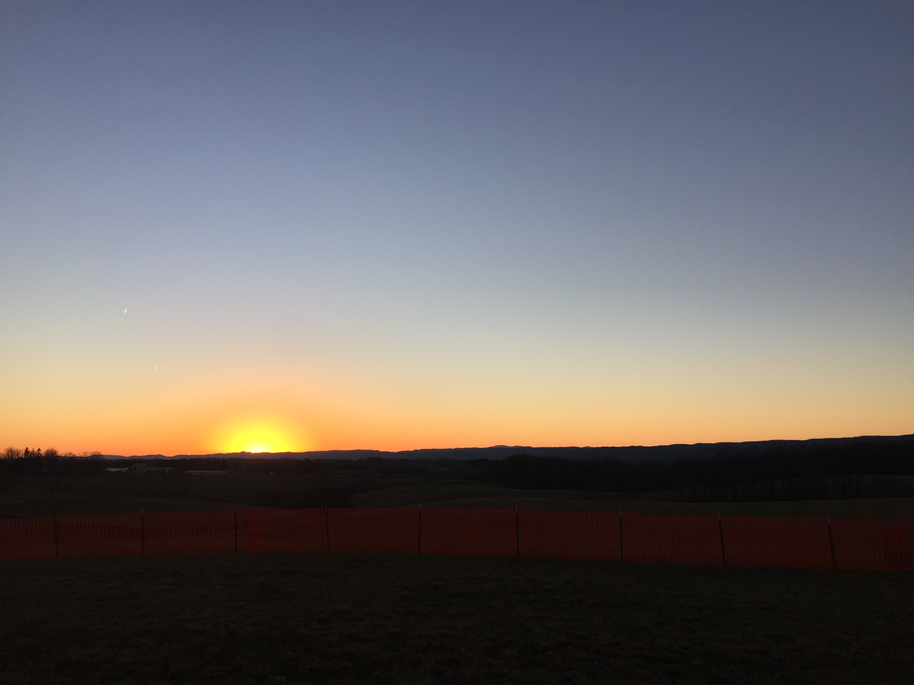

New Reflection
Looking back on my previous reflection, there is a lot I can add to bolster my experiences. With the first website under my belt, I felt more comfortable with the world of graphics and web design. I have to admit learning how to construct the nuances from no base to build from was a difficult task. After a long period of trial and error, my professor advised me with different paths to take to create my desired result. With his guidance, I found a new love for HTML, and a deeper appreciation for all things coding related. I initially stated that, “While I enjoy being a user of online content, I am equally excited to produce some great websites down the road for different student organizations, professional tasks, and for fun.” I am happy to say that not only has this come to fruition but also I have exceeded my expectations. With tasks such as learning to integrate PHP and other back end functions, I have combined my passion for coding with the degree I am earning at Virginia Tech. While I initially believed I could turn to my peers for help, I found my professor to be an invaluable resource that I referenced frequently to combat my problems.
Looking back at my answer to the question, "What did you find most challenging about composing in HTML", I feel that I am now able to provide a more concrete and succinct answer. While new to the game, I faced a steep learning curve. What does an ordered list look like, what is a menu, how do I create tags??? Now that I have seen HTML from multiple sides of the coin, the hardest part to me is building around CSS without attempting to modify it. Issues such as resizing pictures that are locked into place tend to stretch and appear with lower quality than I want. Moving a text box can become a daunting task. I hope that over the course of a year I will learn more than simply HTML and progress to understanding the core of web design. I see some large accomplishments I have overcome since the start of the semester which make me proud to continue building.
My notion of digital writing has evolved since the start of the semester. I initially believed digital writing, “referred to the act of reading information online, not composing it in an interesting and readable way.” After the first unit, I expanded my definition to include both online writing and coding. As the semester progressed, I learned about the value of Podcasting and video creation. Both play an integral role in digital writing that transcends my previous notions of the topic. The direction of this class taught me both the value of digital writing as well as broadening my values of the VT shaped student.